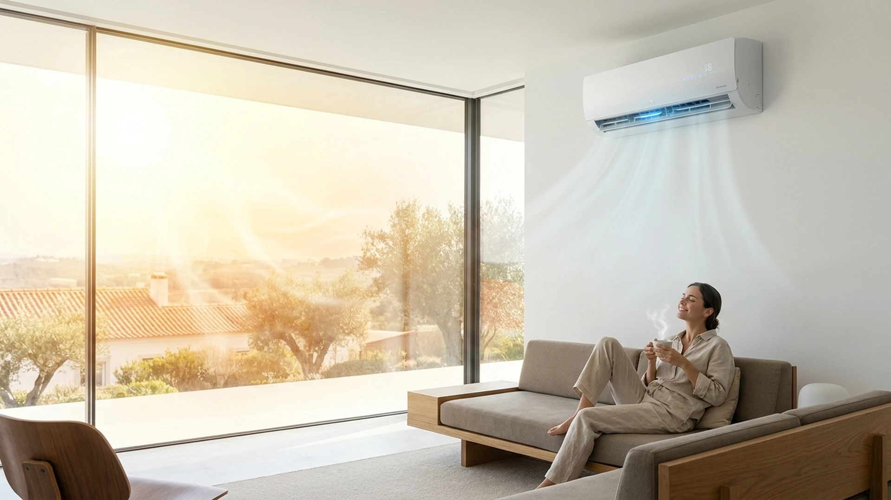
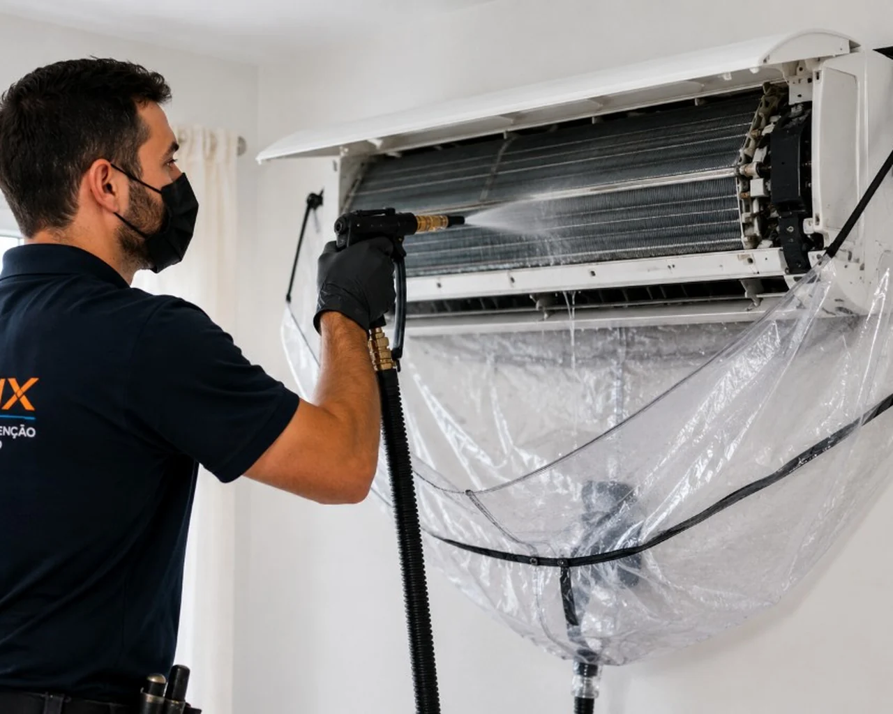
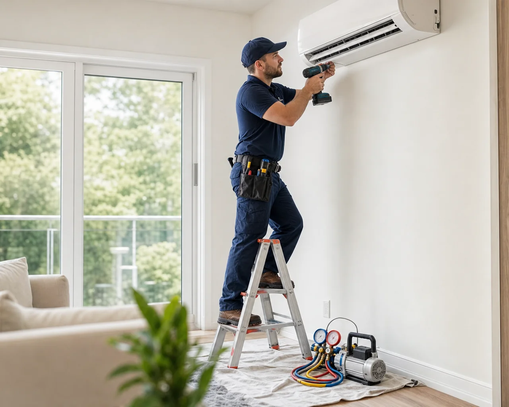

Splits, casetes y por conductos
Todo tipo de unidad
Limpieza profunda · Lisboa y Setúbal
Limpieza profunda de todo tipo de aire acondicionado en Lisboa y Setúbal — splits, casetes de techo, por conductos, consola de suelo y mural. Higienización, mantenimiento preventivo y, cuando haga falta, instalación y reparación.

Splits, casetes, conductos, suelo y mural
Todo tipo de unidad
Filtros, turbina y serpentines
Servicio acompañado
Lisboa y Setúbal
Lavado y limpieza profunda de todo tipo de aire acondicionado — splits, casetes, por conductos, consola de suelo y mural. También hacemos mantenimiento, instalación y reparación.
Splits, casetes de techo, unidades por conductos, consola de suelo y mural: filtros, serpentines y higienización.
Instalación de splits para viviendas, apartamentos y negocios, con acabados cuidados.
Revisión del split con limpieza, comprobación del drenaje y del funcionamiento, para evitar averías.
Diagnóstico rápido y resolución eficaz de problemas.
Contratos de mantenimiento para locales comerciales.
Viviendas y comercios, una o varias unidades. Díganos la marca y el modelo, o envíe una foto por WhatsApp, y preparamos el presupuesto.
Unidad interior en la pared. Mono-split y multi-split.
Unidades empotradas, típicas de tiendas, oficinas y restaurantes.
Sistemas con rejillas en el techo — viviendas y espacios comerciales.
Unidades de suelo, frecuentes en oficinas y viviendas.
Equipos sin instalación fija.
Sistemas multiunidad para tiendas, oficinas y edificios.

Lavado de la unidad interior con cuidado del espacio
Lavamos y higienizamos la unidad interior — filtros, rejillas y serpentines — en splits, casetes, por conductos, consola de suelo y mural, y comprobamos el funcionamiento.
Identificamos el tipo de unidad y el estado de los filtros.
Retirada del polvo acumulado en la unidad interior.
Limpieza del intercambiador para que el aire vuelva a circular mejor.
Comprobación del desagüe y del funcionamiento antes de salir.
Cuando necesita un equipo nuevo, la instalación incluye un taladrado cuidado, acabados limpios y pruebas antes de salir.
Menos polvo y menos daños en la pared.
Aislamiento correcto y acabado alineado.
El equipo se prueba antes de que salgamos.
Orientación sobre el uso y el cuidado del equipo.

AirFix.pt hace lavado, limpieza profunda y mantenimiento de aire acondicionado para viviendas, apartamentos, tiendas y empresas. También instalamos y reparamos. Trabajamos con rigor, limpieza en el lugar y presupuestos claros.
Atención disponible en portugués e inglés. También podemos comunicarnos con clientes de habla hispana.
Excelente experiencia. Realicé un mantenimiento rutinario de mi aire acondicionado y todo el proceso fue impecable. Fueron muy respetuosos en mi hogar, amables y se tomaron el tiempo de explicar todo lo que estaban haciendo para mantener el equipo funcionando de forma eficiente. Es difícil encontrar un servicio tan fiable — ¡cinco estrellas!
Traducción del comentario original en inglés
Fotografías y vídeos de una limpieza y higienización hechas por AirFix.pt.
Lavado y higienización de splits, casetes, por conductos, consola de suelo y mural. También instalamos y reparamos.
Respuestas cortas, con el detalle en la página de cada tema.